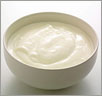

Согласно результатам исследования итальянских ученых, опубликованных в сентябрьском номере журнала Applied and Environmental Microbiology установлено, что бактерии, использующиеся для получения кисломолочных продуктов, содержат ингибиторы АПФ, это может способствовать появлению специфической пищи, понижающей артериальное давление.
Согласно результатам исследования итальянских ученых, опубликованных в сентябрьском номере журнала Applied and Environmental Microbiology установлено, что бактерии, использующиеся для получения кисломолочных продуктов, содержат ингибиторы АПФ, это может способствовать появлению специфической пищи, понижающей артериальное давление.
Способность бактерий, продуцирующих молочную кислоту, сворачивать белок молока, превращая его в биологически активные компоненты, открывает огромные просторы для научных исследований. В проведенном исследовании авторы использовали два штамма лактобацилл, обычно применяемых в производстве кисломолочных продуктов. В результате было получено большое количество веществ, идентичных хорошо известным ингибиторам АПФ. Дальнейшее изучение этих компонентов показало, что они имели сходную с ингибиторами АПФ активность.
По мнению исследователей, это первые данные, демонстрирующие возможность использовать бактерий в производстве ингибиторов АПФ.
Applied and Environmental Microbiology, 2000; 66: 3898-3904.